Chapter 3 Introduction to the Tidyverse
3.1 Data wrangling
3.1.1 Load dataset
# Load the gapminder package
library(gapminder)## Warning: package 'gapminder' was built under R version 4.3.1# Load the dplyr package
library(dplyr)##
## Attaching package: 'dplyr'## The following objects are masked from 'package:stats':
##
## filter, lag## The following objects are masked from 'package:base':
##
## intersect, setdiff, setequal, union# Look at the gapminder dataset
gapminder## # A tibble: 1,704 × 6
## country continent year lifeExp pop gdpPercap
## <fct> <fct> <int> <dbl> <int> <dbl>
## 1 Afghanistan Asia 1952 28.8 8425333 779.
## 2 Afghanistan Asia 1957 30.3 9240934 821.
## 3 Afghanistan Asia 1962 32.0 10267083 853.
## 4 Afghanistan Asia 1967 34.0 11537966 836.
## 5 Afghanistan Asia 1972 36.1 13079460 740.
## 6 Afghanistan Asia 1977 38.4 14880372 786.
## 7 Afghanistan Asia 1982 39.9 12881816 978.
## 8 Afghanistan Asia 1987 40.8 13867957 852.
## 9 Afghanistan Asia 1992 41.7 16317921 649.
## 10 Afghanistan Asia 1997 41.8 22227415 635.
## # ℹ 1,694 more rows3.1.2 Filtering
The filter verb extracts particular observations based on a condition. pipe (%>%)
# Filter the gapminder dataset for the year 1957
# version 1
gapminder %>%
filter(year == 1957)## # A tibble: 142 × 6
## country continent year lifeExp pop gdpPercap
## <fct> <fct> <int> <dbl> <int> <dbl>
## 1 Afghanistan Asia 1957 30.3 9240934 821.
## 2 Albania Europe 1957 59.3 1476505 1942.
## 3 Algeria Africa 1957 45.7 10270856 3014.
## 4 Angola Africa 1957 32.0 4561361 3828.
## 5 Argentina Americas 1957 64.4 19610538 6857.
## 6 Australia Oceania 1957 70.3 9712569 10950.
## 7 Austria Europe 1957 67.5 6965860 8843.
## 8 Bahrain Asia 1957 53.8 138655 11636.
## 9 Bangladesh Asia 1957 39.3 51365468 662.
## 10 Belgium Europe 1957 69.2 8989111 9715.
## # ℹ 132 more rows# version 2
gapminder[gapminder$year == 1957, ]## # A tibble: 142 × 6
## country continent year lifeExp pop gdpPercap
## <fct> <fct> <int> <dbl> <int> <dbl>
## 1 Afghanistan Asia 1957 30.3 9240934 821.
## 2 Albania Europe 1957 59.3 1476505 1942.
## 3 Algeria Africa 1957 45.7 10270856 3014.
## 4 Angola Africa 1957 32.0 4561361 3828.
## 5 Argentina Americas 1957 64.4 19610538 6857.
## 6 Australia Oceania 1957 70.3 9712569 10950.
## 7 Austria Europe 1957 67.5 6965860 8843.
## 8 Bahrain Asia 1957 53.8 138655 11636.
## 9 Bangladesh Asia 1957 39.3 51365468 662.
## 10 Belgium Europe 1957 69.2 8989111 9715.
## # ℹ 132 more rowsUse the filter() verb to set two conditions.
# Filter for China in 2002
# version 1
gapminder %>%
filter(country == "China", year == 2002)## # A tibble: 1 × 6
## country continent year lifeExp pop gdpPercap
## <fct> <fct> <int> <dbl> <int> <dbl>
## 1 China Asia 2002 72.0 1280400000 3119.# version 2
gapminder[gapminder$country == "China" & gapminder$year == 2002, ]## # A tibble: 1 × 6
## country continent year lifeExp pop gdpPercap
## <fct> <fct> <int> <dbl> <int> <dbl>
## 1 China Asia 2002 72.0 1280400000 3119.3.1.3 Arrange
Use arrange() to sort observations in ascending or descending order of a particular variable.
# Sort in ascending order of lifeExp
gapminder %>%
arrange(lifeExp)## # A tibble: 1,704 × 6
## country continent year lifeExp pop gdpPercap
## <fct> <fct> <int> <dbl> <int> <dbl>
## 1 Rwanda Africa 1992 23.6 7290203 737.
## 2 Afghanistan Asia 1952 28.8 8425333 779.
## 3 Gambia Africa 1952 30 284320 485.
## 4 Angola Africa 1952 30.0 4232095 3521.
## 5 Sierra Leone Africa 1952 30.3 2143249 880.
## 6 Afghanistan Asia 1957 30.3 9240934 821.
## 7 Cambodia Asia 1977 31.2 6978607 525.
## 8 Mozambique Africa 1952 31.3 6446316 469.
## 9 Sierra Leone Africa 1957 31.6 2295678 1004.
## 10 Burkina Faso Africa 1952 32.0 4469979 543.
## # ℹ 1,694 more rows# Sort in descending order of lifeExp
gapminder %>%
arrange(desc(lifeExp))## # A tibble: 1,704 × 6
## country continent year lifeExp pop gdpPercap
## <fct> <fct> <int> <dbl> <int> <dbl>
## 1 Japan Asia 2007 82.6 127467972 31656.
## 2 Hong Kong, China Asia 2007 82.2 6980412 39725.
## 3 Japan Asia 2002 82 127065841 28605.
## 4 Iceland Europe 2007 81.8 301931 36181.
## 5 Switzerland Europe 2007 81.7 7554661 37506.
## 6 Hong Kong, China Asia 2002 81.5 6762476 30209.
## 7 Australia Oceania 2007 81.2 20434176 34435.
## 8 Spain Europe 2007 80.9 40448191 28821.
## 9 Sweden Europe 2007 80.9 9031088 33860.
## 10 Israel Asia 2007 80.7 6426679 25523.
## # ℹ 1,694 more rowsFiltering and arranging
# Filter for the year 1957, then arrange in descending order of population
gapminder %>%
filter(year == 1957) %>%
arrange(desc(pop))## # A tibble: 142 × 6
## country continent year lifeExp pop gdpPercap
## <fct> <fct> <int> <dbl> <int> <dbl>
## 1 China Asia 1957 50.5 637408000 576.
## 2 India Asia 1957 40.2 409000000 590.
## 3 United States Americas 1957 69.5 171984000 14847.
## 4 Japan Asia 1957 65.5 91563009 4318.
## 5 Indonesia Asia 1957 39.9 90124000 859.
## 6 Germany Europe 1957 69.1 71019069 10188.
## 7 Brazil Americas 1957 53.3 65551171 2487.
## 8 United Kingdom Europe 1957 70.4 51430000 11283.
## 9 Bangladesh Asia 1957 39.3 51365468 662.
## 10 Italy Europe 1957 67.8 49182000 6249.
## # ℹ 132 more rows3.1.4 Mutate
Can change exist columns, or create new columns.
# Use mutate to change lifeExp to be in months
gapminder %>%
mutate(lifeExp = 12 * lifeExp)## # A tibble: 1,704 × 6
## country continent year lifeExp pop gdpPercap
## <fct> <fct> <int> <dbl> <int> <dbl>
## 1 Afghanistan Asia 1952 346. 8425333 779.
## 2 Afghanistan Asia 1957 364. 9240934 821.
## 3 Afghanistan Asia 1962 384. 10267083 853.
## 4 Afghanistan Asia 1967 408. 11537966 836.
## 5 Afghanistan Asia 1972 433. 13079460 740.
## 6 Afghanistan Asia 1977 461. 14880372 786.
## 7 Afghanistan Asia 1982 478. 12881816 978.
## 8 Afghanistan Asia 1987 490. 13867957 852.
## 9 Afghanistan Asia 1992 500. 16317921 649.
## 10 Afghanistan Asia 1997 501. 22227415 635.
## # ℹ 1,694 more rows# Use mutate to create a new column called lifeExpMonths
gapminder %>%
mutate(lifeExpMonths = 12 * lifeExp)## # A tibble: 1,704 × 7
## country continent year lifeExp pop gdpPercap lifeExpMonths
## <fct> <fct> <int> <dbl> <int> <dbl> <dbl>
## 1 Afghanistan Asia 1952 28.8 8425333 779. 346.
## 2 Afghanistan Asia 1957 30.3 9240934 821. 364.
## 3 Afghanistan Asia 1962 32.0 10267083 853. 384.
## 4 Afghanistan Asia 1967 34.0 11537966 836. 408.
## 5 Afghanistan Asia 1972 36.1 13079460 740. 433.
## 6 Afghanistan Asia 1977 38.4 14880372 786. 461.
## 7 Afghanistan Asia 1982 39.9 12881816 978. 478.
## 8 Afghanistan Asia 1987 40.8 13867957 852. 490.
## 9 Afghanistan Asia 1992 41.7 16317921 649. 500.
## 10 Afghanistan Asia 1997 41.8 22227415 635. 501.
## # ℹ 1,694 more rowsCombining filter, mutate, and arrange.
# Filter, mutate, and arrange the gapminder dataset
gapminder %>%
filter(year == 2007) %>%
mutate(lifeExpMonths = 12*lifeExp) %>%
arrange(desc(lifeExpMonths))## # A tibble: 142 × 7
## country continent year lifeExp pop gdpPercap lifeExpMonths
## <fct> <fct> <int> <dbl> <int> <dbl> <dbl>
## 1 Japan Asia 2007 82.6 127467972 31656. 991.
## 2 Hong Kong, China Asia 2007 82.2 6980412 39725. 986.
## 3 Iceland Europe 2007 81.8 301931 36181. 981.
## 4 Switzerland Europe 2007 81.7 7554661 37506. 980.
## 5 Australia Oceania 2007 81.2 20434176 34435. 975.
## 6 Spain Europe 2007 80.9 40448191 28821. 971.
## 7 Sweden Europe 2007 80.9 9031088 33860. 971.
## 8 Israel Asia 2007 80.7 6426679 25523. 969.
## 9 France Europe 2007 80.7 61083916 30470. 968.
## 10 Canada Americas 2007 80.7 33390141 36319. 968.
## # ℹ 132 more rows3.2 Data visualization
3.2.1 Subset df variable
# Load the ggplot2 package as well
library(ggplot2)
# Create gapminder_1952
gapminder_1952 <- gapminder %>%
filter(year == 1952)3.2.2 ggplot aesthetics
There are three parts to a ggplot graph.
Data: The data that we’re visualizing.
Aesthetic mapping: The mapping of variables in your dataset to aesthetics in your graph. (In a scatterplot, your two dimensions are the x axis and the y axis)
Layer: Specifying the type of graph you’re creating. You do that by adding a layer to the graph - use a
+after the ggplot, and thengeom_point(). The “geom” means you’re adding a type of geometric object to the graph, the “point” indicates it’s a scatter plot, where each observation corresponds to one point.
# Change to put pop on the x-axis and gdpPercap on the y-axis
ggplot(gapminder_1952, aes(x = pop, y = gdpPercap)) +
geom_point()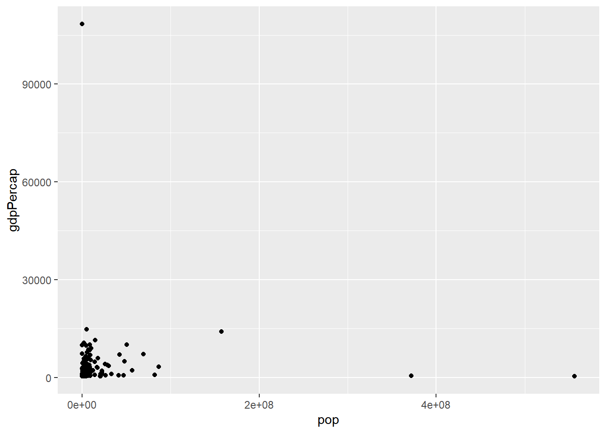
# Create a scatter plot with pop on the x-axis and lifeExp on the y-axis
ggplot(gapminder_1952, aes(x = pop, y = lifeExp)) +
geom_point()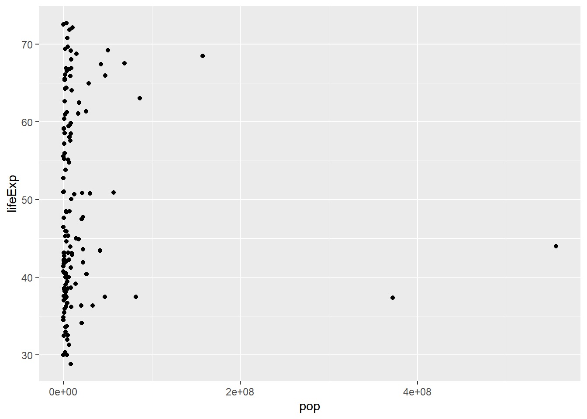
3.2.2.1 Log scales
Putting the x-axes on a log scale
Since population is spread over several orders of magnitude, with some countries having a much higher population than others, it’s a good idea to put the x-axis on a log scale.
# Change this plot to put the x-axis on a log scale
ggplot(gapminder_1952, aes(x = pop, y = lifeExp)) +
geom_point() +
scale_x_log10()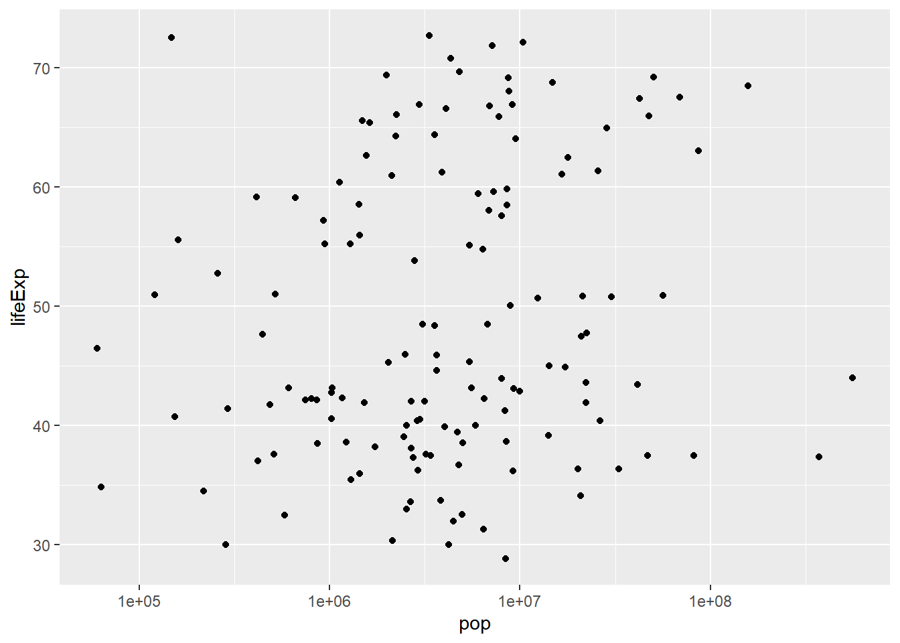
Putting the x- and y- axes on a log scale
# Scatter plot comparing pop and gdpPercap, with both axes on a log scale
ggplot(gapminder_1952, aes(x = pop, y = gdpPercap)) +
geom_point() +
scale_x_log10() +
scale_y_log10()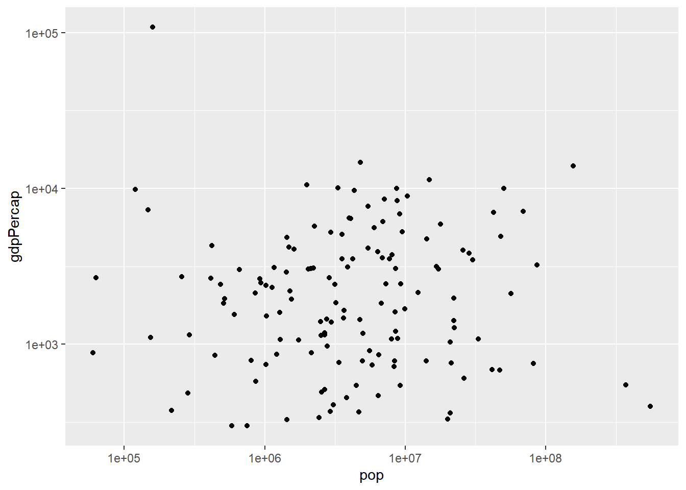
3.2.3 Faceting
ggplot2 lets you divide your plot into subplots to get one smaller graph for each factor of categorical variables. By syntax facet_wrap(~ var).
# Scatter plot comparing pop and lifeExp, faceted by continent
ggplot(gapminder_1952, aes(x = pop, y = lifeExp)) +
geom_point() +
scale_x_log10() +
facet_wrap(~ continent)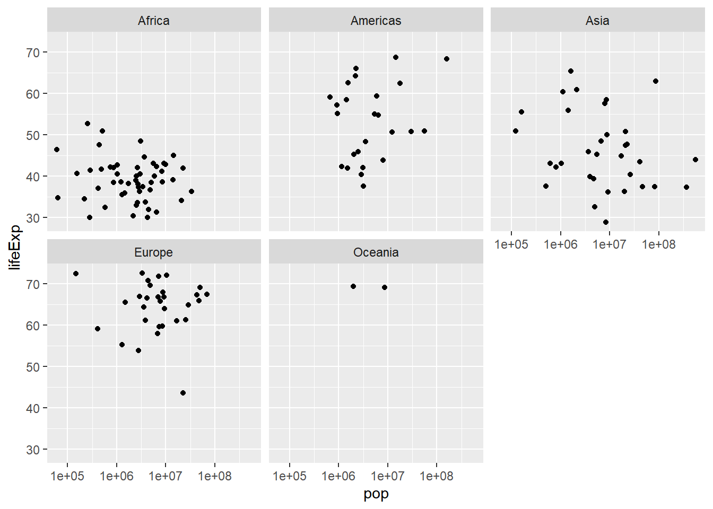
Faceting by year
Now that you’re able to use faceting, however, you can create a graph showing all the country-level data from 1952 to 2007, to understand how global statistics have changed over time.
# Scatter plot comparing gdpPercap and lifeExp, with color representing continent
# and size representing population, faceted by year
ggplot(gapminder, aes(x = gdpPercap, y = lifeExp, color = continent,
size = pop)) +
geom_point() +
scale_x_log10() +
facet_wrap(~ year)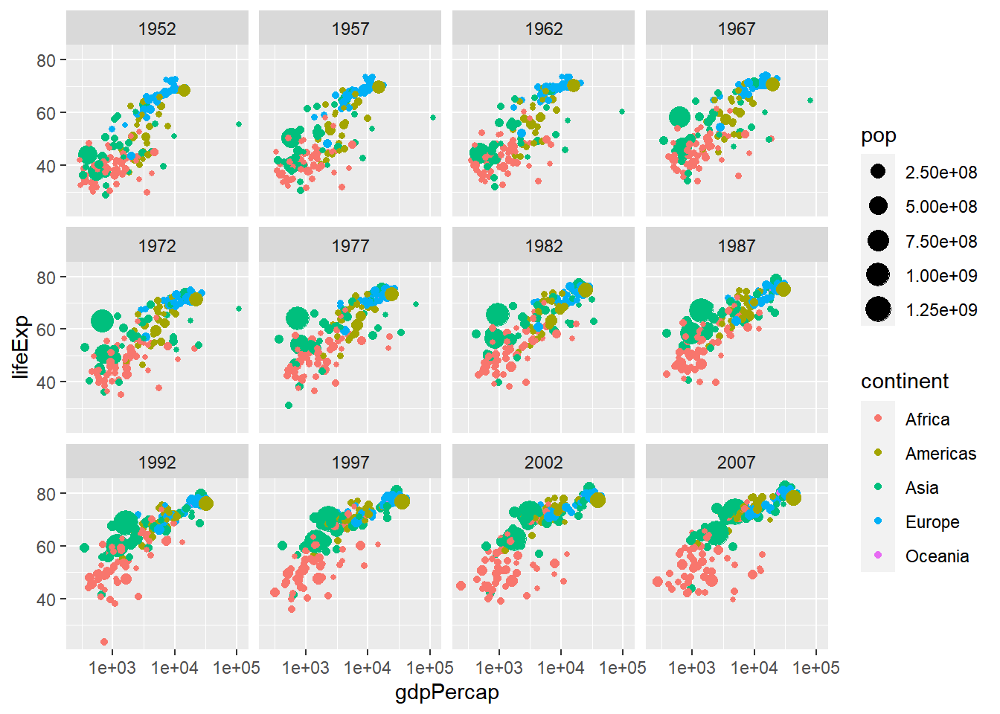
3.3 Grouping & summarizing
3.3.1 Summarize
Turn many rows into one.(變項的summary) Fuctions you can use in summarize(): mean, sum, median, min, max.
Summarize multiple variables at once:
# Filter for 1957 then summarize the median life expectancy and the maximum GDP per capita
gapminder %>%
filter(year == 1957) %>%
summarize(medianLifeExp = median(lifeExp),
maxGdpPercap = max(gdpPercap))## # A tibble: 1 × 2
## medianLifeExp maxGdpPercap
## <dbl> <dbl>
## 1 48.4 113523.3.3.2 Group by
Turn groups into one row each.
Summarizing by one variable.
# Find median life expectancy and maximum GDP per capita in each year
gapminder %>%
group_by(year) %>%
summarize(medianLifeExp = median(lifeExp),
maxGdpPercap = max(gdpPercap))## # A tibble: 12 × 3
## year medianLifeExp maxGdpPercap
## <int> <dbl> <dbl>
## 1 1952 45.1 108382.
## 2 1957 48.4 113523.
## 3 1962 50.9 95458.
## 4 1967 53.8 80895.
## 5 1972 56.5 109348.
## 6 1977 59.7 59265.
## 7 1982 62.4 33693.
## 8 1987 65.8 31541.
## 9 1992 67.7 34933.
## 10 1997 69.4 41283.
## 11 2002 70.8 44684.
## 12 2007 71.9 49357.# Find median life expectancy and maximum GDP per capita in each continent in 1957
gapminder %>%
filter(year == 1957) %>%
group_by(continent) %>%
summarize(medianLifeExp = median(lifeExp),
maxGdpPercap = max(gdpPercap))## # A tibble: 5 × 3
## continent medianLifeExp maxGdpPercap
## <fct> <dbl> <dbl>
## 1 Africa 40.6 5487.
## 2 Americas 56.1 14847.
## 3 Asia 48.3 113523.
## 4 Europe 67.6 17909.
## 5 Oceania 70.3 12247.Summarizing by more variables.
# Find median life expectancy and maximum GDP per capita in each continent/year combination
gapminder %>%
group_by(year, continent) %>%
summarize(medianLifeExp = median(lifeExp),
maxGdpPercap = max(gdpPercap))## `summarise()` has grouped output by 'year'.
## You can override using the `.groups`
## argument.## # A tibble: 60 × 4
## # Groups: year [12]
## year continent medianLifeExp maxGdpPercap
## <int> <fct> <dbl> <dbl>
## 1 1952 Africa 38.8 4725.
## 2 1952 Americas 54.7 13990.
## 3 1952 Asia 44.9 108382.
## 4 1952 Europe 65.9 14734.
## 5 1952 Oceania 69.3 10557.
## 6 1957 Africa 40.6 5487.
## 7 1957 Americas 56.1 14847.
## 8 1957 Asia 48.3 113523.
## 9 1957 Europe 67.6 17909.
## 10 1957 Oceania 70.3 12247.
## # ℹ 50 more rows3.3.3 Visualizing summarized data
Add expand_limits(y = 0) to make sure the plot’s y-axis includes zero.
# Create a scatter plot showing the change in medianLifeExp over time
by_year <- gapminder %>%
group_by(year) %>%
summarize(medianLifeExp = median(lifeExp),
maxGdpPercap = max(gdpPercap))
ggplot(by_year, aes(x = year, y = medianLifeExp)) +
geom_point() +
expand_limits(y = 0)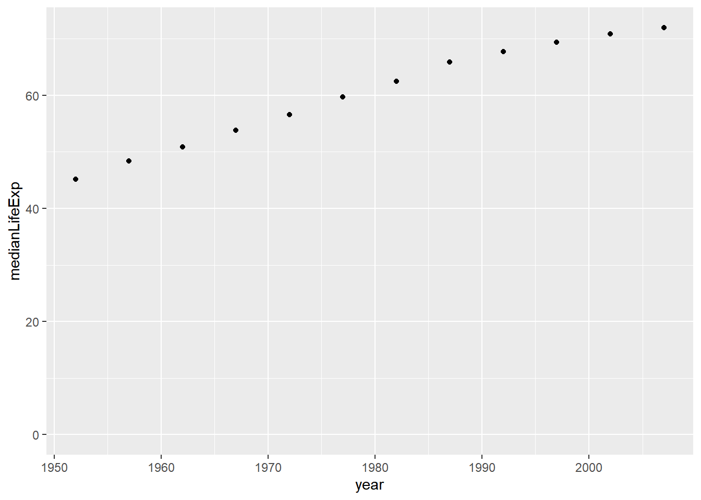
# Summarize medianGdpPercap within each continent within each year: by_year_continent
by_year_continent <- gapminder %>%
group_by(continent, year) %>%
summarize(medianGdpPercap = median(gdpPercap))## `summarise()` has grouped output by
## 'continent'. You can override using the
## `.groups` argument.# Plot the change in medianGdpPercap in each continent over time
ggplot(by_year_continent, aes(x = year, y = medianGdpPercap,
color = continent)) +
geom_point() +
expand_limits(y = 0)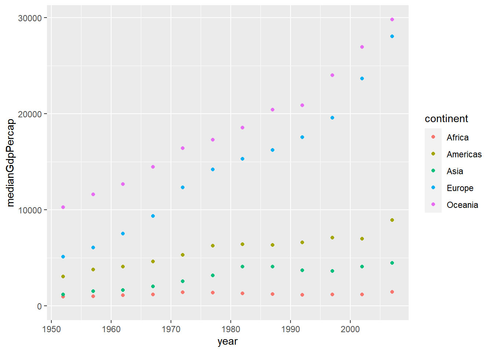
# Summarize the median GDP and median life expectancy per continent in 2007
by_continent_2007 <- gapminder %>%
filter(year == 2007) %>%
group_by(continent) %>%
summarize(medianLifeExp = median(lifeExp),
medianGdpPercap = median(gdpPercap))
# Use a scatter plot to compare the median GDP and median life expectancy
ggplot(by_continent_2007, aes(x = medianGdpPercap, y = medianLifeExp,
color = continent)) +
geom_point()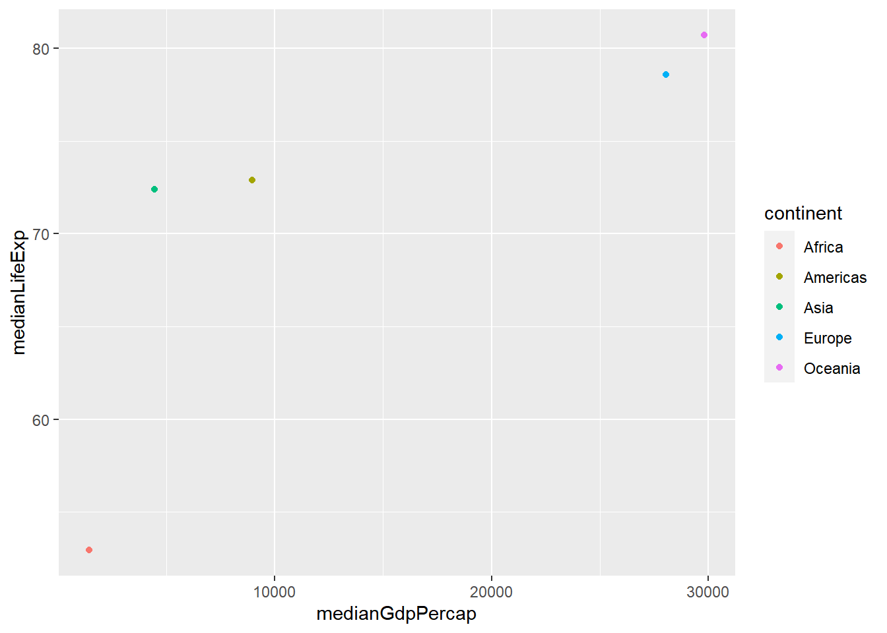
3.4 Types of visualizations
| line plots | bar plots | histograms | box plots | |
|---|---|---|---|---|
| usage | useful for showing change over time | comparing statistics for each of several categories | describe the distribution of a one-dimensional numeric variable | compare the distribution of a numeric variable among several categories |
| geom | geom_line() |
geom_col() |
geom_histogram(bins = int) |
geom_boxplot() |
3.4.1 Line plots
A line plot is useful for visualizing trends over time.
# Summarize the median gdpPercap by year, then save it as by_year
by_year <- gapminder %>%
group_by(year) %>%
summarize(medianGdpPercap = median(gdpPercap))
# Create a line plot showing the change in medianGdpPercap over time
ggplot(by_year, aes(x = year, y = medianGdpPercap)) +
geom_line() +
expand_limits(y = 0)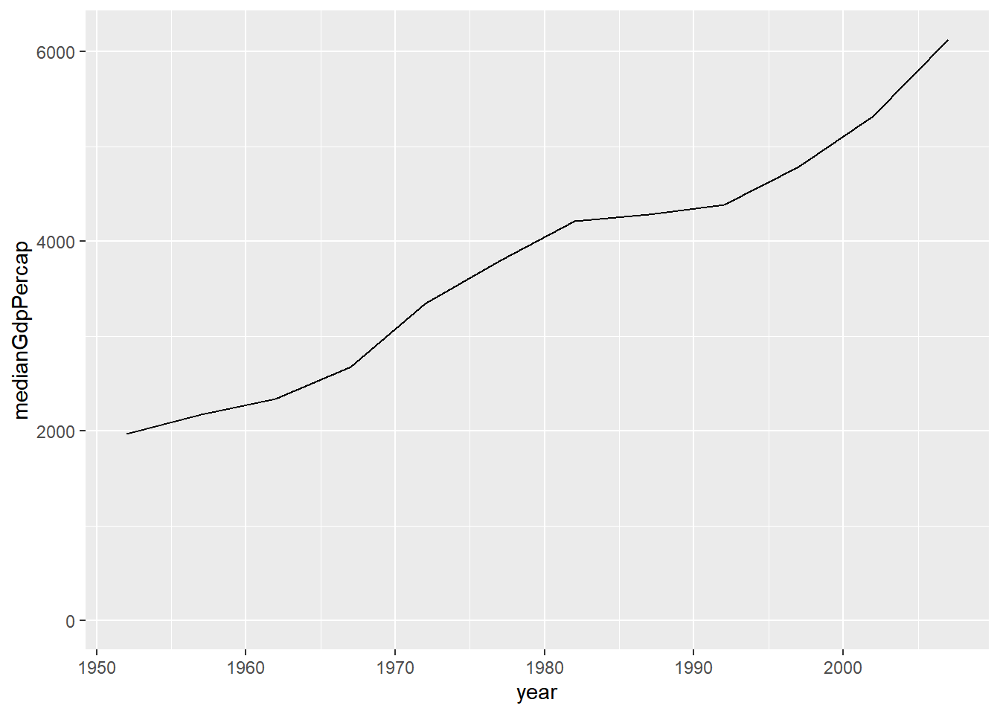
# Summarize the median gdpPercap by year & continent, save as by_year_continent
by_year_continent <- gapminder %>%
group_by(year, continent) %>%
summarize(medianGdpPercap = median(gdpPercap))## `summarise()` has grouped output by 'year'.
## You can override using the `.groups`
## argument.# Create a line plot showing the change in medianGdpPercap by continent over time
ggplot(by_year_continent, aes(x = year, y = medianGdpPercap,
color = continent)) +
geom_line() +
expand_limits(y = 0)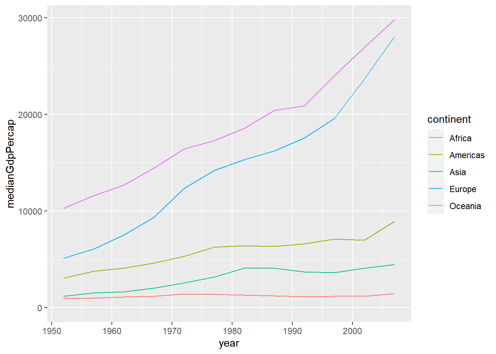
3.4.2 Bar plots
A bar plot is useful for visualizing summary statistics.
# Summarize the median gdpPercap by continent in 1952
by_continent <- gapminder %>%
filter(year == 1952) %>%
group_by(continent) %>%
summarise(medianGdpPercap = median(gdpPercap))
# Create a bar plot showing medianGdp by continent
ggplot(by_continent, aes(x = continent, y = medianGdpPercap)) +
geom_col()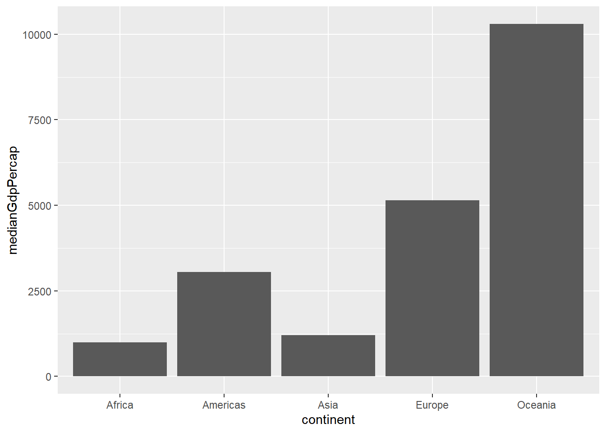
# Filter for observations in the Oceania continent in 1952
oceania_1952 <- gapminder %>%
filter(year == 1952 & continent == "Oceania")
# Create a bar plot of gdpPercap by country
ggplot(oceania_1952, aes(x = country, y = gdpPercap)) +
geom_col()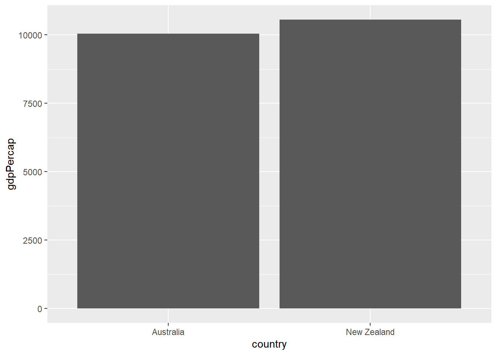
3.4.3 Histograms
A histogram is useful for examining the distribution of a numeric variable. So there is only x-axis.
gapminder_1952 <- gapminder %>%
filter(year == 1952) %>%
mutate(pop_by_mil = pop / 1000000)
# Create a histogram of population (pop_by_mil)
ggplot(gapminder_1952, aes(x = pop_by_mil)) +
geom_histogram(bins = 50)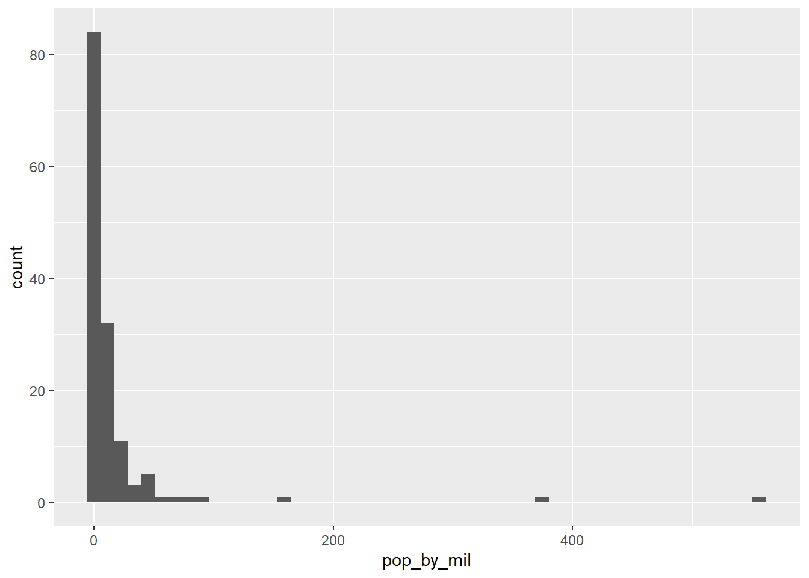
To make the histogram more informative, you can try putting the x-axis on a log scale.
gapminder_1952 <- gapminder %>%
filter(year == 1952)
# Create a histogram of population (pop), with x on a log scale
ggplot(gapminder_1952, aes(x = pop)) +
geom_histogram(bins = 40) +
scale_x_log10()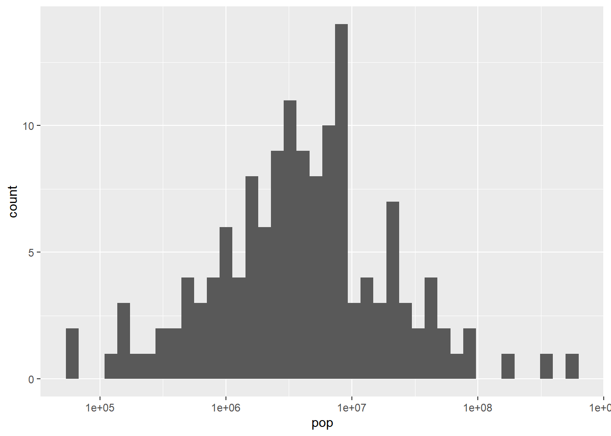
3.4.4 Box plots
A boxplot is useful for comparing a distribution of values across several groups.
gapminder_1952 <- gapminder %>%
filter(year == 1952)
# Create a boxplot comparing gdpPercap among continents
ggplot(gapminder_1952, aes(x = continent, y = gdpPercap)) +
geom_boxplot() +
scale_y_log10()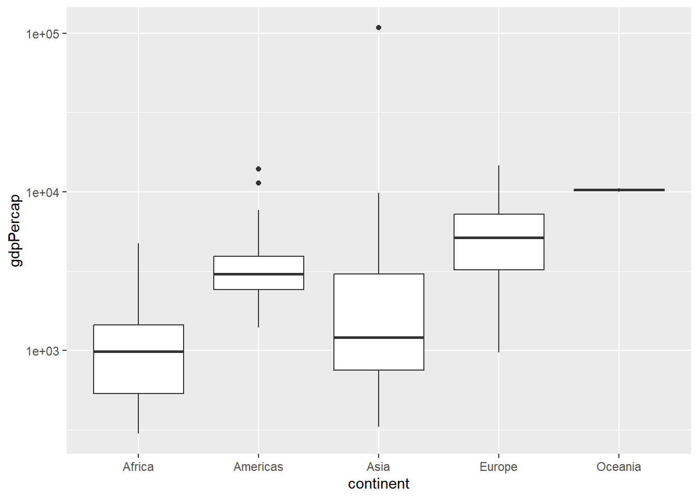